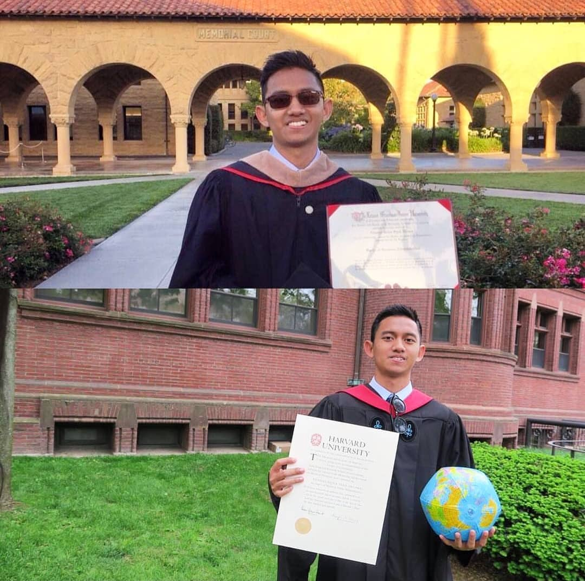

#DreamsComeTrue
mimpi tidaklah hanya sekedar mimpi, angan-angan
mimpi itu energi, pencipta harapan yang akan diiyakan oleh Sang Maha Kuasa
mimpi itu tentang percaya akan masa depan
jangan sepelekan mimpi, karena bisa jadi atau malah memang itulah perantara do'a dalam wujud yang lain
#DreamsComeTrue
ada satu postingan instagram CEO Ruangguru yang selalu jadi motivasi buatku, ini diposting tanggal 2 Januari 2019 dan udah dapet lebih dari 36 ribu likes, selain postingan ini sebenernya juga masih banyak postingan keren lainnya. Coba cek di ig :@belvadevara

KAK, GIMANA CARA SUKSES?
Pertama, jangan takut mimpi besar. Banyak orang takut duluan dan memenjarakan potensi dia hanya dengan pikirannya.
Bukan kompetensinya yang berhasil, tapi mimpinya yang terlalu terbatas. Memang, byk orang sekitar psti akan melihat gak mngkin. Tapi, bagi gw, sebaliknya karena itu hal yang "gak mungkin", jadinya "sepadan" untuk gw kejar.
Dulu SMA gw SMA baru. Gw angkatan pertama, seangkatan 30 orang. Belum ada ceritanya ada alumni masuk PTN, menunggu masuk NTU Singapura yg terkenal hanya utk yg menang medali olimpiade.
Repotnya lagi, gw mimpinya mau msuk jurusan tersulit gelar ganda.
Begitu pula ketika Bilang Ke bos kalo gw mau menerapkan S2 Hanya Ke Harvard Dan Stanford (Dan ga mau univ lainnya)
Hanya DENGAN 2 thn Pengalaman kerja, Lalu dia senyum Dan Bilang "Keajaiban kalo Sampai diterima" .
TAPI gw berusaha sekuat gw. Izin bolos sekolah untuk belajar di rumah. Lalu belajar gw mandiri dari bangun tidur, ampe tidur lagi tanpa henti.
Sebelum tidur, bahan selanjutnya udah ditata di sebelah kanan bantal gak keganggu yg lain2, dan bisa langsung buka buku lagi.
Cari buku utk belajar juga dibela2in sampe memburu ke toko loak buku bekas krn mau selengkap dan semurah mungkin.
Bisa dibilang, gw waktu itu "terobsesi" terhadap mimpi gw itu.
Lalu apa hasil?
1) Gw berhasil jadi org Indonesia pertama yang masuk jurusan gelar ganda di NTU Singapura (Komputer dan Bisnis), dengan beasiswa penuh.
2) Bukan hanya menerima Harvard "atau" Stanford, gw pilih itu kaget banget diterima di dua2nya. Lalu, gw menjadi org Indonesia pertama
yang masuk program gelar ganda Harvard dan Stanford, dua universitas paling bergengsi di dunia, dengan beasiswa penuh.
Kalo gw dengerin kata org yg sangsi, gw gak akan sampai di sini. Gw percaya butuh org agak "gila" untuk mencapai hasil yang "gila" pula.
Gw tidak setuju akan disetujui, gw jg punya mimpi gila yg masih sedang gw garap kok. Ada banyak faktor lain (gw ceritakan di pos lain nanti)
untuk sukses, tapi mimpi itu FONDASI awalnya. Mesti kokoh, dan kamu perlu percaya padanya. Intinya, langkah pertama, mimpilah dulu segila2nya, menyetujui atau nggak itu urusan kedua. Setuju gak? 😁
selengkapnya di: https://www.instagram.com/p/BsHxGkRF_dO/